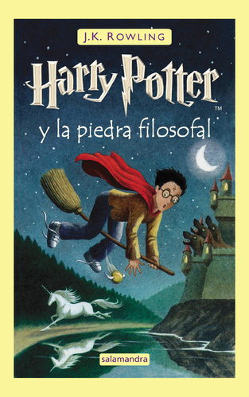
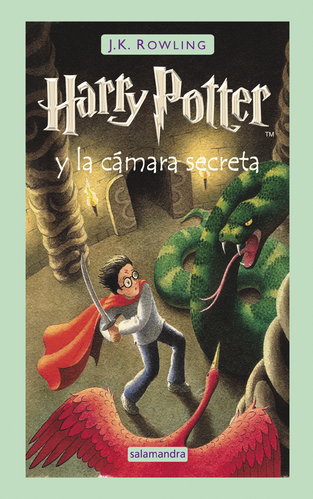
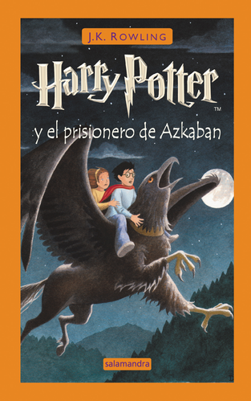
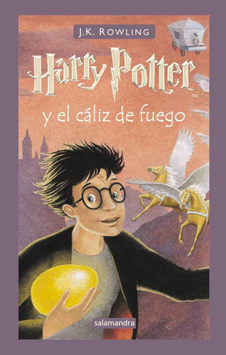
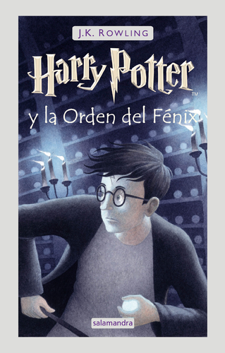
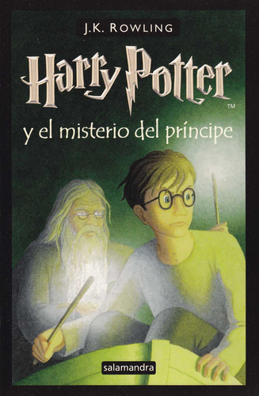
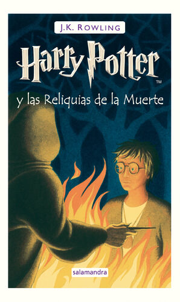

Libros

Harry Potter y la Piedra Filosofal

Harry Potter y la Cámara Secreta

Harry Potter y el Prisionero de Azkabán

Harry Potter y el Cáliz de Fuego

Harry Potter y la Órden del Fénix

Harry Potter y el Misterio del Príncipe

Harry Potter y las Reliquias de la Muerte